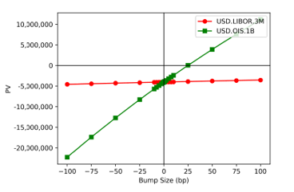

1.5.1.4.1.7. Risk Analysis Framework#
1.5.1.4.1.7.1. Comprehensive Interest Rate Risk Management for Linear Swaps#

1.5.1.4.1.7.1.1. 🎯 Enterprise Risk Management Overview#
The Interest Rate Risk Analysis Framework delivers institutional-grade risk assessment capabilities specifically designed for linear interest rate swaps. Our comprehensive system provides sophisticated risk measures described in sections 4.4.2, 4.4.3, and 4.4.9, ensuring precise risk attribution and management for fixed income portfolios.
1.5.1.4.1.7.1.2. 🛡️ Advanced Risk Factor Architecture#
1.5.1.4.1.7.1.2.1. 📊 Risk Complexity Hierarchy#
Risk Type |
Complexity Level |
Definition Approach |
Business Application |
|---|---|---|---|
DV01 Measures |
Simple |
Well-defined mathematical framework |
Direct hedging strategies |
Interest Rate Risk |
Complex |
Instrument-based risk attribution |
Portfolio risk management |
Curve Risk |
Advanced |
Hedge Engine methodology |
Sophisticated risk control |
Interest Rate Risk is generally defined as risk to instruments, utilizing a sophisticated approach where the instrument set is defined using a Hedge Engine that describes relationships between curves and instruments used to model these relationships.
1.5.1.4.1.7.1.2.2. 🎪 Advanced Risk Modeling Examples#
3M Curve Definition: Can be modeled as direct curve using direct swap instruments
Spread Curve Modeling: Alternative approach as spread curve against OIS using 3s/OIS basis swaps
Multi-Curve Framework: Comprehensive risk attribution across interconnected curve structures
1.5.1.4.1.7.1.3. 🎛️ Enterprise-Grade Risk Management System#
namespace xsigma {
/**
* @brief Comprehensive risk type enumeration for IR swaps
*
* This advanced risk classification system provides granular risk
* attribution capabilities for institutional fixed income portfolios
* with comprehensive coverage of all relevant risk factors.
*/
enum class RiskType {
INTEREST_RATE_DELTA, // First-order interest rate risk
INTEREST_RATE_GAMMA, // Second-order interest rate risk (convexity)
FX_DELTA, // Foreign exchange risk for cross-currency swaps
CREDIT_SPREAD_DELTA, // Credit spread risk for corporate curves
VOLATILITY_VEGA, // Volatility risk (not applicable to linear swaps)
BASIS_RISK, // Basis risk between different curve constructions
CURVE_RISK // Curve shape and parallel shift risk
};
/**
* @brief Advanced risk factor specification structure
*
* Comprehensive risk factor definition enabling precise risk attribution
* and sophisticated hedging strategies for institutional portfolios.
*/
struct RiskFactor {
std::string name; // Human-readable risk factor name
RiskType type; // Risk classification type
std::string curve_id; // Associated curve identifier
std::string instrument_id; // Hedging instrument identifier
datetime maturity; // Risk factor maturity
currency risk_currency; // Currency denomination
// Validation du facteur de risque
void validate() const {
if (name.empty()) {
XSIGMA_THROW("Risk factor name cannot be empty");
}
if (curve_id.empty()) {
XSIGMA_THROW("Curve ID is required for risk factor");
}
}
};
// Gestionnaire principal des risques pour swaps
class SwapRiskManager {
public:
// Structure pour les résultats de calcul de risque
struct RiskResult {
std::map<std::string, double> delta_by_curve;
std::map<std::string, double> gamma_by_curve;
std::map<std::string, double> cross_gamma;
double total_dv01;
double fx_delta; // Pour swaps cross-currency
std::vector<std::pair<RiskFactor, double>> detailed_risks;
};
// Calcul complet des risques pour un swap
RiskResult calculate_comprehensive_risk(
const swap_instrument& swap,
const any_container_precomputed& market_data,
const HedgeEngineConfig& hedge_config) const {
RiskResult result;
// Calcul des deltas par courbe
result.delta_by_curve = calculate_curve_deltas(swap, market_data, hedge_config);
// Calcul des gammas
result.gamma_by_curve = calculate_curve_gammas(swap, market_data, hedge_config);
// Calcul des cross-gammas
result.cross_gamma = calculate_cross_gammas(swap, market_data, hedge_config);
// Calcul DV01 total
result.total_dv01 = calculate_total_dv01(swap, market_data);
// Calcul FX delta pour swaps cross-currency
if (is_cross_currency_swap(swap)) {
result.fx_delta = calculate_fx_delta(swap, market_data);
}
// Risques détaillés par facteur
result.detailed_risks = calculate_detailed_risks(swap, market_data, hedge_config);
return result;
}
private:
std::map<std::string, double> calculate_curve_deltas(
const swap_instrument& swap,
const any_container_precomputed& market_data,
const HedgeEngineConfig& hedge_config) const;
std::map<std::string, double> calculate_curve_gammas(
const swap_instrument& swap,
const any_container_precomputed& market_data,
const HedgeEngineConfig& hedge_config) const;
std::map<std::string, double> calculate_cross_gammas(
const swap_instrument& swap,
const any_container_precomputed& market_data,
const HedgeEngineConfig& hedge_config) const;
double calculate_total_dv01(
const swap_instrument& swap,
const any_container_precomputed& market_data) const;
double calculate_fx_delta(
const swap_instrument& swap,
const any_container_precomputed& market_data) const;
std::vector<std::pair<RiskFactor, double>> calculate_detailed_risks(
const swap_instrument& swap,
const any_container_precomputed& market_data,
const HedgeEngineConfig& hedge_config) const;
bool is_cross_currency_swap(const swap_instrument& swap) const;
};
}
Cette implémentation C++ dans Our project fournit un système complet de gestion des risques avec support pour multiples types de risque et calculs détaillés.
1.5.1.4.1.7.2. Inputs de Calcul de Risque#
1.5.1.4.1.7.2.1. Paramètres de Configuration#
Nom |
Description |
|---|---|
BumpSize |
Montant pour bumper les courbes. Applicable seulement pour le risque numérique |
BumpStyle |
Où le bump est additif, multiplicatif, ou relatif. Applicable seulement pour le risque numérique |
Differencing |
Comment appliquer les bumps (Above, Below, Central). Applicable seulement pour le risque numérique |
RiskType |
Catégorie d’instruments à bumper (outright, spreads, discount, etc.) |
Scaling |
Mise à l’échelle des résultats finaux |
ConvertToCurveCurrency |
Si la valeur de risque doit être reportée dans la même devise que la courbe bumpée |
CalculationType |
Numérique ou AD (Différentiation Algorithmique) |
HedgeEngine |
Le Hedge Engine pour définir les instruments et relations de courbe |
// Implémentation Our project de la configuration des paramètres de risque
namespace xsigma {
// Configuration pour calculs de risque
struct RiskCalculationConfig {
// Paramètres de bump
double bump_size = 1e-4; // 1bp par défaut
enum class BumpStyle { ADDITIVE, MULTIPLICATIVE, RELATIVE } bump_style = BumpStyle::ADDITIVE;
enum class DifferencingMethod { ABOVE, BELOW, CENTRAL } differencing = DifferencingMethod::CENTRAL;
// Type de risque
std::string risk_type = "OUTRIGHT"; // OUTRIGHT, SPREADS, DISCOUNT, etc.
// Mise à l'échelle et devise
double scaling_factor = 1.0;
bool convert_to_curve_currency = false;
// Méthode de calcul
enum class CalculationType { NUMERICAL, ALGORITHMIC_DIFFERENTIATION } calculation_type = CalculationType::NUMERICAL;
// Configuration Hedge Engine
std::string hedge_engine_name;
// Validation de la configuration
void validate() const {
if (bump_size <= 0) {
XSIGMA_THROW("Bump size must be positive");
}
if (scaling_factor == 0) {
XSIGMA_THROW("Scaling factor cannot be zero");
}
if (hedge_engine_name.empty()) {
XSIGMA_THROW("Hedge engine name is required");
}
}
// Factory pour configurations standards
static RiskCalculationConfig create_standard_config(const std::string& risk_type) {
RiskCalculationConfig config;
if (risk_type == "DV01") {
config.bump_size = 1e-4; // 1bp
config.bump_style = BumpStyle::ADDITIVE;
config.differencing = DifferencingMethod::CENTRAL;
} else if (risk_type == "GAMMA") {
config.bump_size = 1e-3; // 10bp pour gamma
config.differencing = DifferencingMethod::CENTRAL;
} else if (risk_type == "FX_DELTA") {
config.bump_size = 0.01; // 1% pour FX
config.bump_style = BumpStyle::MULTIPLICATIVE;
}
return config;
}
};
// Calculateur de risque numérique
class NumericalRiskCalculator {
public:
// Calcul de delta par différences finies
double calculate_delta(
const swap_instrument& swap,
const any_container_precomputed& base_market_data,
const std::string& curve_id,
const RiskCalculationConfig& config) const {
double base_pv = swap.price(base_market_data, option_output_enum::PV);
if (config.differencing == RiskCalculationConfig::DifferencingMethod::CENTRAL) {
// Différences centrales
auto up_market = create_bumped_market(base_market_data, curve_id, +config.bump_size, config.bump_style);
auto down_market = create_bumped_market(base_market_data, curve_id, -config.bump_size, config.bump_style);
double up_pv = swap.price(up_market, option_output_enum::PV);
double down_pv = swap.price(down_market, option_output_enum::PV);
return (up_pv - down_pv) / (2.0 * config.bump_size) * config.scaling_factor;
} else if (config.differencing == RiskCalculationConfig::DifferencingMethod::ABOVE) {
// Différences forward
auto up_market = create_bumped_market(base_market_data, curve_id, +config.bump_size, config.bump_style);
double up_pv = swap.price(up_market, option_output_enum::PV);
return (up_pv - base_pv) / config.bump_size * config.scaling_factor;
} else {
// Différences backward
auto down_market = create_bumped_market(base_market_data, curve_id, -config.bump_size, config.bump_style);
double down_pv = swap.price(down_market, option_output_enum::PV);
return (base_pv - down_pv) / config.bump_size * config.scaling_factor;
}
}
// Calcul de gamma par différences finies
double calculate_gamma(
const swap_instrument& swap,
const any_container_precomputed& base_market_data,
const std::string& curve_id,
const RiskCalculationConfig& config) const {
double base_pv = swap.price(base_market_data, option_output_enum::PV);
auto up_market = create_bumped_market(base_market_data, curve_id, +config.bump_size, config.bump_style);
auto down_market = create_bumped_market(base_market_data, curve_id, -config.bump_size, config.bump_style);
double up_pv = swap.price(up_market, option_output_enum::PV);
double down_pv = swap.price(down_market, option_output_enum::PV);
// Gamma = (PV_up - 2*PV_base + PV_down) / (bump_size^2)
return (up_pv - 2.0 * base_pv + down_pv) / (config.bump_size * config.bump_size) * config.scaling_factor;
}
private:
any_container_precomputed create_bumped_market(
const any_container_precomputed& base_market,
const std::string& curve_id,
double bump_amount,
RiskCalculationConfig::BumpStyle bump_style) const;
};
}
Cette implémentation C++ dans Our project fournit des calculateurs de risque numérique avec support pour différentes méthodes de différentiation.
1.5.1.4.1.7.3. Types de Risque Principaux#
1.5.1.4.1.7.3.1. Risque de Taux d’Intérêt (Interest Rate Risk)#
1.5.1.4.1.7.3.1.1. Delta Numérique#
Risque de taux d’intérêt de premier ordre, calculé en utilisant des différences finies en bumpant physiquement (d’un petit montant) chaque instrument pour chaque courbe à tour de rôle et en évaluant le changement dans la PV.
1.5.1.4.1.7.3.1.2. Delta AD (Différentiation Algorithmique)#
Risque de taux d’intérêt de premier ordre calculé en utilisant une technique appelée différentiation algorithmique adjointe (AAD) via dco qui fait partie de la bibliothèque NAG. C’est une implémentation technologique où l’évaluation de chaque opération mathématique élémentaire résulte aussi en le calcul automatique de sa dérivée analytique.
1.5.1.4.1.7.3.1.3. Gamma de Scénario#
Risque de taux d’intérêt de second ordre calculé en bumpant chaque courbe selon un scénario de courbe différent et en calculant le changement dans le delta. Le cross-gamma est le changement résultant dans le delta d’une courbe par rapport à un shift de scénario dans une courbe différente.
1.5.1.4.1.7.3.2. Risque de Change (FX Risk)#
1.5.1.4.1.7.3.2.1. Currency Holding FX Delta#
Défini seulement pour les swaps cross-currency (incluant resettables) et représente le montant de cash nécessaire pour couvrir chaque devise du trade. Par définition, cela est égal aux PVs de devise du trade.
// Implémentation Our project du calcul de risque FX
namespace xsigma {
class FXRiskCalculator {
public:
// Structure pour les résultats de risque FX
struct FXRiskResult {
std::map<currency, double> currency_exposures;
std::map<std::pair<currency, currency>, double> fx_deltas;
double total_fx_risk_usd_equivalent;
};
// Calcul du risque FX pour swap cross-currency
FXRiskResult calculate_fx_risk(
const cross_currency_swap& swap,
const any_container_precomputed& market_data) const {
FXRiskResult result;
// Calcul des exposures par devise
result.currency_exposures = calculate_currency_exposures(swap, market_data);
// Calcul des deltas FX par paire de devises
result.fx_deltas = calculate_fx_deltas(swap, market_data);
// Conversion en équivalent USD pour risque total
result.total_fx_risk_usd_equivalent = calculate_total_fx_risk_usd(
result.currency_exposures, market_data);
return result;
}
// Calcul des exposures par devise
std::map<currency, double> calculate_currency_exposures(
const cross_currency_swap& swap,
const any_container_precomputed& market_data) const {
std::map<currency, double> exposures;
// PV de chaque jambe dans sa devise native
for (const auto& leg : swap.get_legs()) {
currency leg_currency = leg->get_currency();
double leg_pv = leg->price(
market_data.at(swap.get_discount_curve_id(leg_currency)),
market_data.at(swap.get_forecast_curve_id(leg_currency)));
exposures[leg_currency] += leg_pv;
}
return exposures;
}
// Calcul des deltas FX
std::map<std::pair<currency, currency>, double> calculate_fx_deltas(
const cross_currency_swap& swap,
const any_container_precomputed& market_data) const {
std::map<std::pair<currency, currency>, double> fx_deltas;
// Identification des paires FX impliquées
auto currencies = swap.get_involved_currencies();
for (size_t i = 0; i < currencies.size(); ++i) {
for (size_t j = i + 1; j < currencies.size(); ++j) {
auto fx_pair = std::make_pair(currencies[i], currencies[j]);
// Calcul du delta FX par bump de 1%
fx_deltas[fx_pair] = calculate_fx_delta_for_pair(
swap, market_data, fx_pair, 0.01);
}
}
return fx_deltas;
}
private:
double calculate_fx_delta_for_pair(
const cross_currency_swap& swap,
const any_container_precomputed& market_data,
const std::pair<currency, currency>& fx_pair,
double bump_size) const;
double calculate_total_fx_risk_usd(
const std::map<currency, double>& exposures,
const any_container_precomputed& market_data) const;
};
}
Cette implémentation C++ dans Our project calcule le risque FX pour swaps cross-currency avec exposures détaillées par devise.
1.5.1.4.1.7.4. Limitations et Évaluation des Risques#
1.5.1.4.1.7.4.1. Limitations des Calculs Numériques#
Les calculs de risque numérique peuvent échouer si le Hedge Engine utilisé est mal défini (par exemple, sur-contraint), résultant en un échec de construction des courbes bumpées. Le risque AD fournit des dérivées mathématiquement correctes, mais la technologie nécessite beaucoup de mémoire.
1.5.1.4.1.7.4.2. Considérations de Performance#
1.5.1.4.1.7.4.2.1. Calculs Numériques#
Avantages : Simplicité d’implémentation, flexibilité
Inconvénients : Temps de calcul élevé, erreurs de troncature
1.5.1.4.1.7.4.2.2. Différentiation Algorithmique#
Avantages : Précision mathématique, efficacité pour nombreuses sensibilités
Inconvénients : Consommation mémoire élevée, complexité d’implémentation
// Implémentation Our project de la gestion des limitations
namespace xsigma {
class RiskLimitationManager {
public:
// Énumération des types de limitations
enum class LimitationType {
NUMERICAL_PRECISION,
MEMORY_CONSUMPTION,
COMPUTATION_TIME,
HEDGE_ENGINE_CONSTRAINTS,
CURVE_CONSTRUCTION_FAILURE
};
// Structure pour documenter une limitation
struct RiskLimitation {
LimitationType type;
std::string description;
double severity_score; // 0.0 à 1.0
std::string mitigation_strategy;
bool is_blocking;
};
// Évaluation des limitations pour un calcul de risque
std::vector<RiskLimitation> assess_risk_limitations(
const swap_instrument& swap,
const RiskCalculationConfig& config,
const any_container_precomputed& market_data) const {
std::vector<RiskLimitation> limitations;
// Évaluation de la précision numérique
if (config.calculation_type == RiskCalculationConfig::CalculationType::NUMERICAL) {
limitations.push_back({
LimitationType::NUMERICAL_PRECISION,
"Numerical differentiation may introduce truncation errors",
estimate_numerical_precision_impact(config.bump_size),
"Use smaller bump sizes or switch to AD",
false
});
}
// Évaluation de la consommation mémoire pour AD
if (config.calculation_type == RiskCalculationConfig::CalculationType::ALGORITHMIC_DIFFERENTIATION) {
limitations.push_back({
LimitationType::MEMORY_CONSUMPTION,
"AD requires significant memory for complex swaps",
estimate_memory_consumption(swap),
"Monitor memory usage and use numerical fallback if needed",
false
});
}
// Évaluation des contraintes Hedge Engine
limitations.push_back({
LimitationType::HEDGE_ENGINE_CONSTRAINTS,
"Over-constrained hedge engine may cause curve construction failures",
evaluate_hedge_engine_constraints(config.hedge_engine_name),
"Review hedge engine configuration and constraints",
true // Peut être bloquant
});
return limitations;
}
private:
double estimate_numerical_precision_impact(double bump_size) const {
// Plus le bump est petit, plus le risque d'erreur de précision est élevé
if (bump_size < 1e-8) return 0.8;
if (bump_size < 1e-6) return 0.5;
if (bump_size < 1e-4) return 0.2;
return 0.1;
}
double estimate_memory_consumption(const swap_instrument& swap) const {
// Estimation basée sur la complexité du swap
size_t num_cash_flows = swap.get_payment_schedule().get_periods().size();
if (num_cash_flows > 1000) return 0.9;
if (num_cash_flows > 500) return 0.6;
if (num_cash_flows > 100) return 0.3;
return 0.1;
}
double evaluate_hedge_engine_constraints(const std::string& hedge_engine_name) const;
};
}
Cette implémentation C++ dans Our project évalue et gère les limitations des calculs de risque avec stratégies de mitigation.